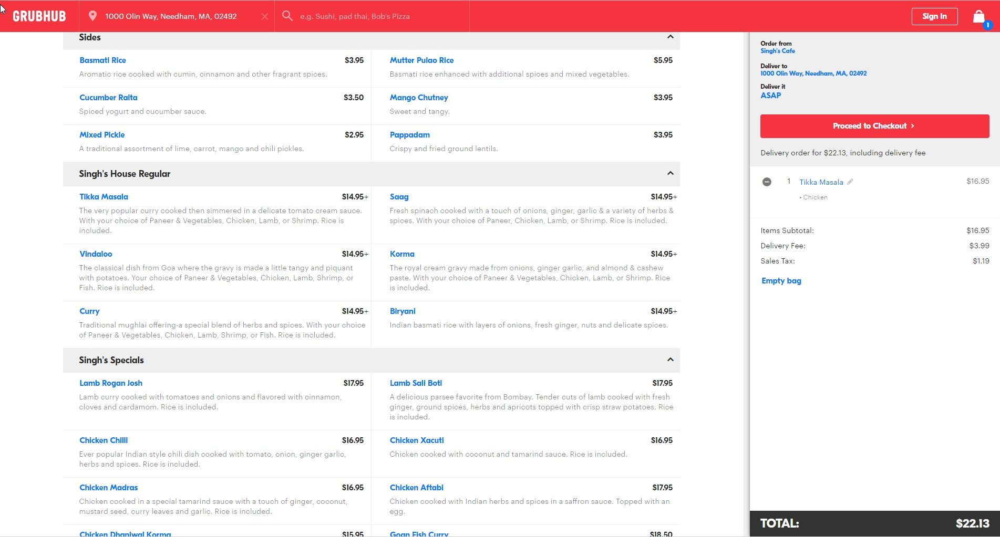
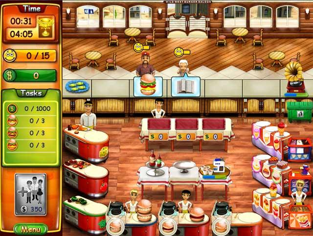

Inspirational Designs
Grubhub
Deniz CelikGrubhub marks the first true online delivery/takeout ordering method not asscoiated with individual businesses. The company was founded on the ideal of reducing the usage of paper menus and evolved into the ordering behemoth it is now. Grubhub consolidates a huge amount of restaurant data into a pleasing interface that summarizes each of the meals and provides space for showing of the users cart while they can continue shopping. The system provides an example of how to create a food interface that combines selection with pricing, tax, and shipping calculation. In our case this would be more akin to calculating the desired quantities of ingredients for their planned meals and in perhaps calculating the price of ordering this food from different vendors. For us, Grubhub represents an already existing product whose interface contains many of the functionalities we will require for our own application. In addition to the computer interface, Grubhub also has an app whose design we can leverage to improve our own interactions with users.

Food Management Games
Hannah Twigg-SmithAlthough these games represent a very simplified version of the entire food preparation/catering process, they do get some things right that we want to embody in our design. For example: one of the main difficulties of a food management game is providing the correct food to each customer in the shortest amount of time. The character being played may change (e.g. a chef, manager, or waiter/waitress), but this goal always remains the same. Many of the games also incorporate money management, employee management, and physical location management, at which point the game's interface often begins to become overwhelming and the game difficulty increases exponentially, (especially with the added time crunch). However, it does drive home the point that being prepared for each meal rush greatly decreases the stress of actually preparing the meals, which is one idea that we aim to incorporate in our design.

Rolodexes
Hannah WilkRolodexes are a way to store and manage data. While in the past it was known for managing contacts. The cylinder allowed the user to scroll through the index cards filled with various contacts and information. To us, we want the user to easily locate and find contacts; much in the way a rolodex allows the user to store their information in a central location. A great thing about a rolodex is that the blank cards in the deck give the user a blank canvas. The user can customize how they can save and format the information. It is a great way for the user to put as much or as little information as they need for a designated card. One inspiration, that is actually an issue of the rolodex, is the filtering system. The Rolodex is a physical object, so however the information is input into the structure, is how it will stay. All the information is in one location. It is up to the user to organize it however they want, but there isn't as much flexibility once the card is in place. Plus the user has to physically access the rolodex, no cloud based systems here.

Siri
Jason LanWith the advent of Siri, Cortana and other voice based system, more and more industries have started to use this interface. Most of the time, voice based system are used for processing tasks that needs to be performed repeatedly, such as customer service for bank, online shopping and etc. This would be a great fit for dining hall staff as they are follow the same routine of meal preperation everyday. Also, the system could be easier for users as they don't need to learn any software, instead, they can just follow the instruction of the software. Last but not least, the interface has a potential of giving user suggestion for meal planning by calculating on the backend based on amount of ingredient, time and etc. Staff would no longer need to do the painstaking planning themselves.
Inspirational Designs Ideation
- Abstractions
- Rainbows: Rainbows put multiple objects together in a harmonically and aethetically pleasing way. They present a way to mangage multiple tasks in a elegant form.
- Books: Book is an easy form to convey to users the information the author intended to address. Especially in kitchen book can be the most common form for recipe and other administration documents.
- Newspapers: Newspaper presents lots of information on a single paper. We can learn from it how to use convey more info to users on a simple form.
- Flowers: A bouquet consists of a number of colorful flowers of various kinds, yet it remains organized. We can make an analogy when designing the look of our interface.
- Rolodex: Rolodex gives the user the opportunity to choose the information he/she needs form the stack of information presented to them. It can be the form for dining hall staff to pick ingredients available in a short time.
- Walkman: Walkman uses music/sound to convey to user information with requring them to read or touch the product. It inspires us a new interaction for the interface.
- Boombox: Simmilarly to walkman, boombox uses the same for of interaction. It's portable and it exterts a larger impact to however many users in the vicinity of the product.
- Punch Cards: Punch cards conveys a large amount of information on a small paper. It can be used to store a colletion of information (such as recipes) without taking much space.
- File Cabinet: File cabinets inspire us to make sure that the information we provide to users is organized in a hierarchial structure that is both intuitive and compact. The ability to search and store data can help small-college catering staff managers better plan inventory and meals
- Sears Catalog: The sears catalog provides an important view into marketing our interface against possible competitors. Even though it is mainly a print catalog, the ideas for how to get users to buy your product will help us find users to get feedback from.
- Towers/Pyramids: The structure of pyramids and towers is what inspires us mainly. The idea of having to create a strong foundation to maintain and support the more complex interactions works to remind us to make sure our user research is sound before proceeding.
- Text-to Speech: The idea of being able to seamlessly integrate multiple senses into our interface provides inspiration for utilizing more than just our sight to manage workforces.
- Birds: Birds represent many different ideas. Our insipriation in this case is the use of carrier pigeons as a metaphor for using older technologies to leverage thier strengths instead of trying to use only the most cutting edge ways of interacting.
- Bees: Bees inspire us because of their ordered productivity. In a hive, every bee has a role; some make food, some take care of the young, and some sting humans and die. They are able to perform all of these actions without the verbal/written directions that humans are used to, and they are arguably more productive because of it.
- Beavers: Beavers inspire us to pull resources from multiple locations and work hard to build up our complex ideas into interfaces.
- Seven Wonders of the World: The seven wonders inspire to create beautiful and useufl designs that can last the test of time, in our case, this time is making an interface that will be kept around after this class is over.
- States (South Dakota): The states of the US provide a macro-lens through which to view the catering management problem. In particular, south dakota with its varied and unique production working in tandem provides inspiration for our own designs.
- Dolphins: Dolphins, much like humans, are more effective when working in groups. Nature provides inspiration in many unique ways an this example of combining work to increase efficieny is exteremely applicable to our focus.
- Inspirations
- Paper & Pen: Objects that allow the user to create custom frameworks to store information. Can be portable, however in large quantities it becomes hard to manage. Inspiration in the creative potential of making frameworks to manage systems
- Google Calendar: A product developed by google that allows the user to fill out a virtual calendar that they can access from various screened devices. Inspiring because user can easily access information from wherever internet access is available.
- Outlook: A product developed by mircosoft that allows the users to manage appointments, meetings, contacts and various calendars through one desktop based portal. Inspiring for its security of information and company integrity built behind the scenes.
- Excel: A microsoft based product that allows the user to create various spreadsheets and manage large sums of data. Cell based system is inspirational due to the ability for user to develop custom ways to parse through information
- Open Table- A web based software that allows the user to search various resturaunts in the area and, in application, make reservations. Ease of accessability through website allows user to manage reservations
- Grubhub:A screen based service that allows users to order deivery from various resturaunts online. Web based service allows user to easily go on with their day without stopping and going to pick up food.It helps to autonomize the process while also juggling high end logistics
- Uber Eats: A delivery service set up by the transport company Uber. Like an on demand food truck, uber dropped of resturant food to users for a price. The logistics of delivering food is a source of inspiration
- Survey Monkey: A basic template service online, that allows users to develop customizable questionaires and a method to share with its users. Way to sort information in a way that allows the surveyist a way to collect data in a manageable way.
- Seamless: A food delivery service that allows users to order food from local resturaunts and get it ordered to their location. The logistics and strategies of managing food delivery. They also manage food on a corporate level, unlike grubhub.
- Twitter: A short form social media platform that allows businesses, corporations, and individuals send updates in less that 150 characters. Can be used for data collection and forms of understanding customer base. Inspriration in the form of a platform to data mine to understand groups
- Google Forms: A survey managment system that is managed by google.Allows user to edit asthetic and form of the survey.
- Turbo Tax: A personal tax preparation platform that allows the user to perform unintuitive tasks in intuitive ways
- Trello: Intuitive task management with built-in people management and time management, provides inspiration because it is a fairly unique solution to this common problem.
- Jira: Jira provides a highly customizable agile experience that can be tailored to fit the organizational needs of their users. The ability to organize large groups of people in a highly specialized environment helps inspire us to make our interaction modular such that users can decide which features work best for them.
- Reminder Apps Allow people to stay on task and clears up valuable mental space so they can concentrate more on what they are doing. We want to replicate this experience in our product
- Sticky notes: Allows for easily updateable and fast iteration of ideas/tasks, and does not require any sort of special equipment (just a pencil). Inspiration because it can turn any flat surface into a physical reminder board or task management platform, and they are fairly persistant.
- Whiteboard: Quick planning and ideation experience that inspires a productive atmosphere. Complements sticky notes well by providing a larger drawing/planning space.
- Google Keep: A persistant sticky note-like interface that inspires/represents easy-to-read task management. It's an inspiration to us because it is a simple, digital representation of quintessential tools: sticky notes, pens, and paper.
- Food Managment Games: Represents the basic workflow of running a kitchen without some of the nuances/paperwork that come with real life.